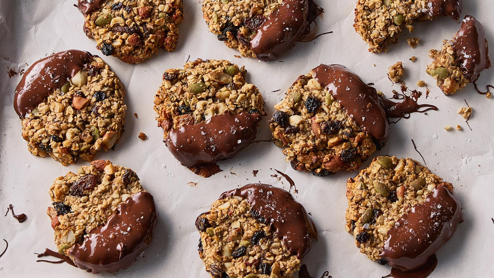

Granola Cookies
Home

Descripition
Feel free to swap in any nuts, seeds or dried fruit you have hanging around to make these easy granola cookies
(just make sure you stick to the same quantities or the cookies might be too crumbly). Dip them in melted dark
chocolate and sprinkle with sea salt for a fancy finish.
Each cookie provides 225 kcal, 7g protein, 22g carbohydrate (of which 12.1g sugars), 11.3g fat (of which 2.8g saturates),
3.8g fibre and 0.23g salt.
Ingredients
- 125g/4½oz porridge oats
- 20g/¾oz pumpkin seeds
- 70g/2½oz mixed nuts, roughly chopped
- 60g/2¼oz raisins or other dried fruit, chopped if large
- ½ tsp ground cinnamon
- 1 tbsp chia seeds
- 60g/2¼oz smooth peanut butter
- 1 ripe banana (about 100g/3½oz peeled weight), mashed
- 20g/¾oz honey
- ¼ tsp fine salt
For the chocolate coating (optional)
- 50g/1¾oz chocolate, melted
- sea salt flakes, for sprinkling
Steps
- Preheat the oven to 180C/160C Fan/Gas 4 and line a large baking tray with baking paper.
- Mix the oats, pumpkin seeds, nuts, dried fruit, cinnamon, chia seeds and fine salt in a large bowl.
- In a separate bowl, stir the peanut butter, banana and honey together until smooth.
- Add the banana mixture to the dry ingredients and mix until everything is evenly coated.
- Using damp hands to prevent sticking, divide the mixture into nine equal portions. Shape each portion into
a cookie about 1cm/½in thick, pressing the mixture together firmly as you put it on the tray. The cookies won’t
spread as they bake, so shape them as you’d like them to look.
- Bake for 16–18 minutes, or until lightly golden around the edges. Leave to cool completely on the tray.
- If adding the chocolate coating, pour the melted chocolate into a small bowl or mug wide enough to dip the cookies
into. Dip one quarter of each cookie into the chocolate, then return it to the baking paper. Sprinkle with a little
sea salt and leave the chocolate to set.
- Once the chocolate has set, store in an airtight container for up to a week.